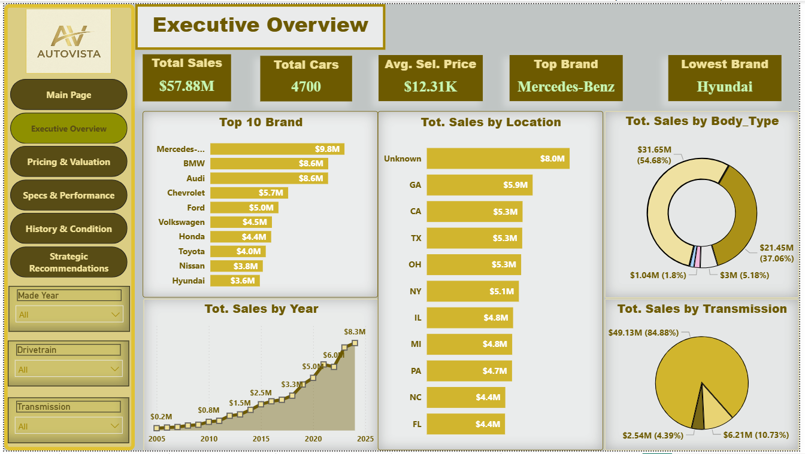
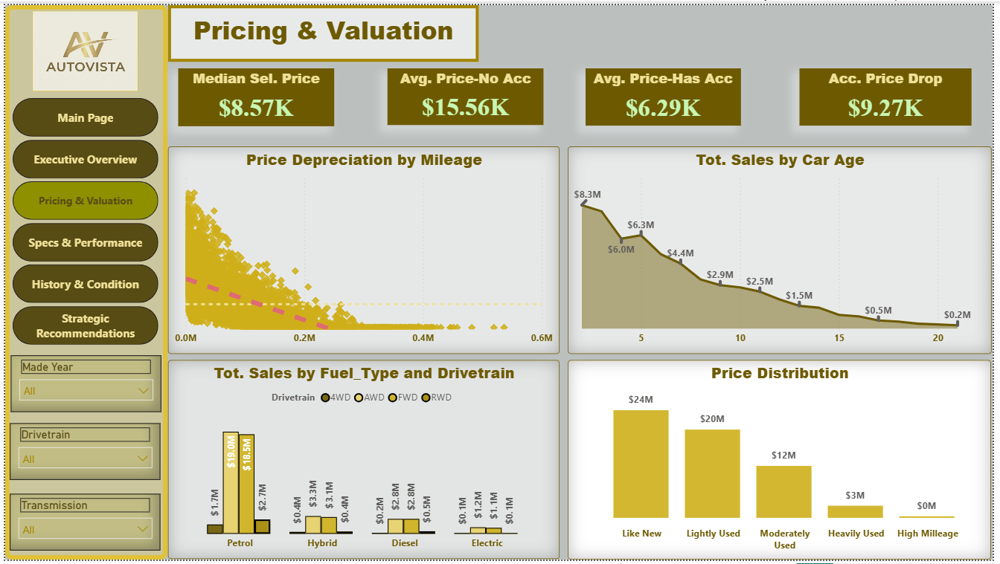
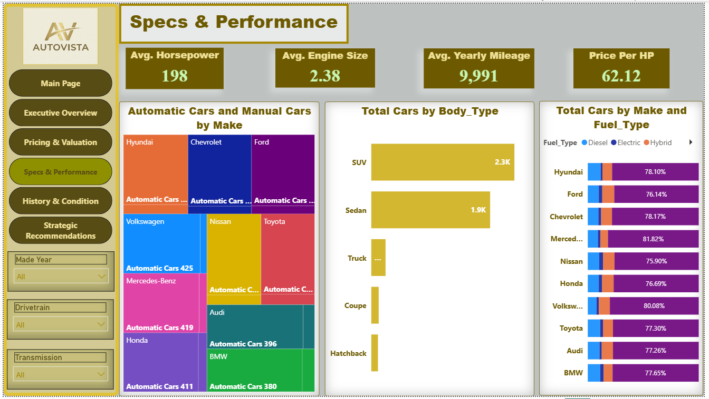
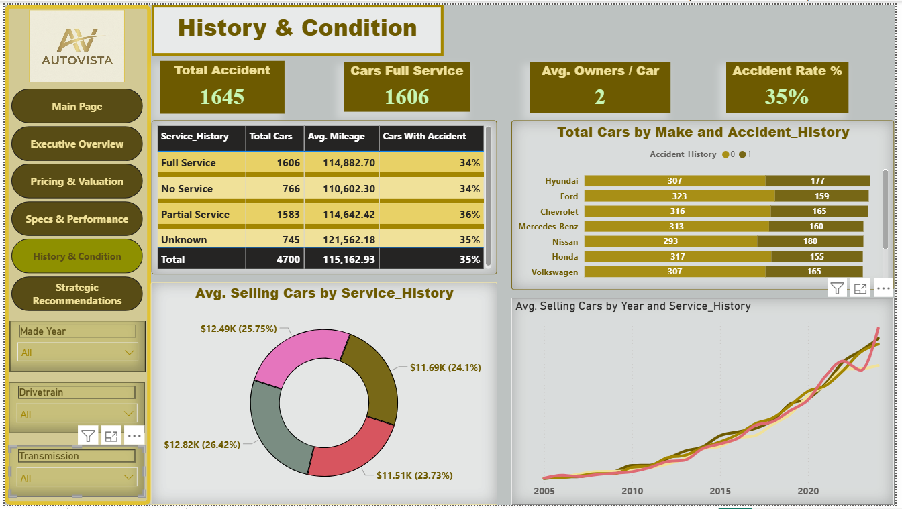

Case Study
AutoVista — Used Cars Dealership Analytics
Project Overview & Downloads
AutoVista is an end-to-end Business Intelligence solution designed for a commercial used-car dealership. The business needed actionable insights to optimize inventory allocation, understand pricing depreciation, evaluate vehicle specs demand, and minimize financial risks associated with accident history.
By connecting sales, specifications, and service history datasets, this interactive multi-page Power BI dashboard empowers executive managers, inventory buyers, and sales teams to make data-driven pricing and stock decisions.
$57.88M
Total Revenue
4,700
Cars Sold
$12.31K
Avg. Selling Price
35%
Accident Rate
1. Executive Overview
Presents high-level business performance across sales revenue, top-selling car brands, regional state concentration, and body style breakdown.
- Top Revenue Drivers: Mercedes-Benz led total sales with $9.8M, followed by BMW ($8.6M) and Audi ($8.6M).
- Body Style Concentration: SUVs and Sedans dominate sales revenue at $31.65M (54.68%) and $21.45M (37.06%) respectively.
- Geographic Performance: Top states include Georgia ($5.9M), California ($5.3M), and Texas ($5.3M).

2. Pricing & Valuation
Analyzes vehicle price depreciation against mileage, age, fuel types, and the financial impact of accident records.
- Accident Value Loss: Cars without accidents average $15.56K, while cars with accident history average $6.29K (an average price drop of $9.27K).
- Age Depreciation: Sales peak strongly for vehicles within 1–5 years of age ($8.3M to $6.0M) and drop significantly after 10 years.
- Drivetrain Preferences: Petrol-engine Front-Wheel Drive (FWD) and All-Wheel Drive (AWD) represent the largest revenue share.

3. Specs & Performance
Explores technical specifications including horsepower, engine size, fuel efficiency, and transmission preferences.
- Transmission Dominance: Automatic vehicles heavily dominate customer purchases at 84.88% ($49.13M) of total revenue.
- Vehicle Averages: Average Horsepower: 198 HP | Average Engine Size: 2.38L | Avg. Yearly Mileage: 9,991 miles.
- Fuel Type Distribution: High preference for Hybrid/Petrol variants across all major makes.

4. History & Condition
Evaluates service records, owner counts, and maintenance compliance to measure customer confidence and resale stability.
- Maintenance Breakdown: 1,606 cars had Full Service history, maintaining a competitive average mileage of ~114.8K miles.
- Owner History: Average number of previous owners is 2 per car across the fleet.

Strategic Recommendations
Based on the end-to-end data analysis across all pages, the following actionable strategies are recommended:
1. Risk Management & Accident Pricing
- Implement a multi-tier inspection score instead of a flat price deduction for accident vehicles. Focus on reconditioning vehicles with minor damage to recover higher resale value ($9.27K average drop).
2. Inventory & Purchasing Optimization
- Allocate ~80% of purchasing budget to Automatic SUVs and Sedans, as Automatic vehicles dominate sales at 84.88%.
- Accelerate inventory turnover for vehicles older than 10 years using targeted promotional discounts to avoid severe depreciation.
3. Regional Expansion Strategy
- Increase inventory allocation and target localized marketing campaigns in top-performing states: Georgia ($5.9M), California ($5.3M), and Texas ($5.3M).
- Enforce mandatory location tracking during intake/sales entry to eliminate unclassified ($8.0M Unknown) location data.
4. Brand Positioning & Portfolio Balance
- Maintain luxury lineups (Mercedes-Benz, BMW, Audi) to maximize profit margins, while leveraging budget brands (Hyundai) for fast cash flow and high turnover.
5. Service History & Value Addition
- Introduce an in-house "Certified Pre-Owned" (CPO) program for vehicles with complete service records to justify premium pricing and boost buyer confidence.